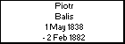

l i n k s
Children with:
Katarzyna Zajac
Siblings:
Helena Maria Balis
Wladyslawa Balis
Stefania Maria Balis
Jan Franciszek Balis
Piotr Stefan Balis
Franciszek Feliks Balis
syn Feliksa Aleksandra Balis i Marii Prymas
Children:
Janek Balis
Julian Balis
Alfreda Balis
Janina Balis
Julian Balis
Born: 10 Apr 1902
Married 8 Jun 1926, Ploki, to
Katarzyna Zajac
Married to
Bronislawa Sledzinska
Died: 19 Feb 1949
Generated by
GreatFamily 1.1 - FREEWARE